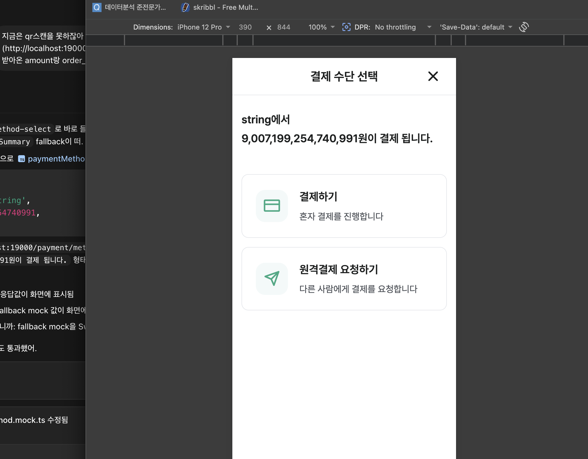

Service
QR 기반 간편결제사용자는 QR로 결제를 요청하고, 서비스는 결제 승인과 가맹점 정보를 연결해 결제 흐름을 완성합니다.
Case Study
ErumPay
QR 기반 간편결제 서비스
사용자에게는 하나의 결제 경험으로 보이지만, 서비스 내부에서는 화면 흐름, 가맹점 정보, 결제 책임이 유기적으로 연결되어야 했습니다.
저는 프론트엔드 PL로 결제 화면과 사용자 흐름을 주도했으며, merchant-service를 중심으로 백엔드 API 구현과 데이터 정합성 처리도 함께 담당했습니다.
Project Overview
QR 기반 결제 서비스를 기획부터 구현까지 함께하며, 결제 화면과 merchant-service를 중심으로 사용자 흐름을 만든 프로젝트입니다.
Service
QR 기반 간편결제사용자는 QR로 결제를 요청하고, 서비스는 결제 승인과 가맹점 정보를 연결해 결제 흐름을 완성합니다.
Target
일반 결제 사용자 / 가맹점 관리자 / PG 관리자결제 사용자, 가맹점 운영자, 관리자 관점에서 필요한 데이터와 기능 책임을 구분했습니다.
Focus
개발자로서의 판단화면 흐름, 컴포넌트 기준, API 구현, 데이터 정합성 방어를 중심으로 정리합니다.
Problem Solving Highlights
화면, API, 상태 흐름이 어긋난 지점을 찾아 결제 경험이 끊기지 않도록 정리했습니다.
Representative Case / User Experience
QR 결제 상점명 표시 오류
Error Handling
서버 내부 오류 메시지 노출 방지Payment Flow
원격결제 이어하기와 멱등성 처리State Management
더치페이 타임아웃·상태 처리Architecture
결제 화면에서 필요한 가맹점 정보를 merchant-service API로 조회하고 관리했습니다.
React Native 화면에서 카드 등록, 추천 카드 확인, QR 결제 요청으로 이어지는 사용자 흐름을 구성했습니다.
프로젝트 공통 호출 경로를 통해 merchant-service와 연결하고, 결제 화면에 필요한 가맹점 데이터를 확인했습니다.
JPA와 MySQL을 사용하고, DB 제약 조건으로 데이터 무결성을 보강했습니다.
My Role
프론트엔드 PL로 결제 흐름을 주도하고, merchant-service 구현을 함께 담당했습니다.
Frontend PL / Payment Flow
기획부터 화면 구현까지 이어진 결제 흐름Backend Scope
merchant-service 구현 범위| Scope | Feature | Purpose |
|---|---|---|
| Register | 가맹점 등록 | 사업자번호와 기본 정보로 가맹점 생성 |
| Read | 가맹점 조회 | 결제 및 관리 화면에 필요한 정보 제공 |
| Update | 가맹점 수정 | 운영 중 변경 정보 반영 |
| Delete | 가맹점 삭제 | 관리 정책에 따른 데이터 처리 |
| Validation | 중복 등록 방지 | 사업자번호 기준 데이터 정합성 유지 |
Data Model
ERD는 가맹점 식별과 중복 방어에 필요한 필드를 중심으로 정리했습니다.Result
프론트엔드 PL과 merchant-service 개발을 맡아 주요 결제 흐름을 구현했고, 최종 프로젝트 대상을 수상했습니다.
Engineering Notes
문제를 어떻게 기록하고 판단했는지 보여주는 개발 과정 기록입니다.
Troubleshooting Log
통합 테스트 이슈를 원인·해결·검증 기준으로 기록했습니다.오류를 단순 현상으로 남기지 않고 화면, API 응답, 상태 전이 기준에서 확인해 이후 설명 가능한 근거로 만들었습니다.
Project Documents
BRD, FRS, ERD, 화면설계서 등 산출물을 함께 정리했습니다.본문에서는 대표 문제 해결 사례만 보여주고, 긴 로그와 보조 자료는 면접에서 흐름을 설명할 때 활용할 수 있게 분리했습니다.
Retrospective
운영 경험은 서비스 구현에서도 어떤 흐름과 데이터가 흔들리면 안 되는지 판단하는 기준이 되었습니다.
결제 화면 흐름부터 가맹점 API, DB 제약, 서비스 연결까지 하나의 사용자 경험으로 묶어 볼 수 있었습니다.
MSA에서는 기능 구현뿐 아니라 서비스 경계, API 계약, 예외 응답, 데이터 정합성이 함께 설계되어야 한다는 점을 배웠습니다.
API 문서, 테스트 케이스, ERD, 서비스 간 요청 계약을 더 명확한 산출물로 보강해 설명 가능한 근거를 늘릴 수 있습니다.
GitHub
코드는 프로젝트 맥락을 이해한 뒤 확인할 수 있도록 Case Study 마지막에 배치했습니다.